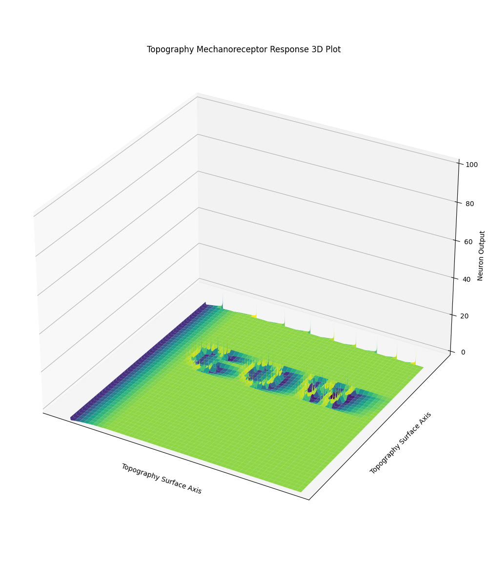
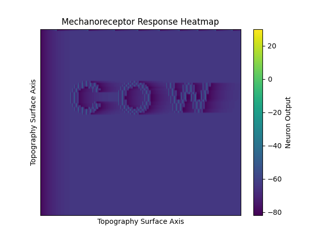
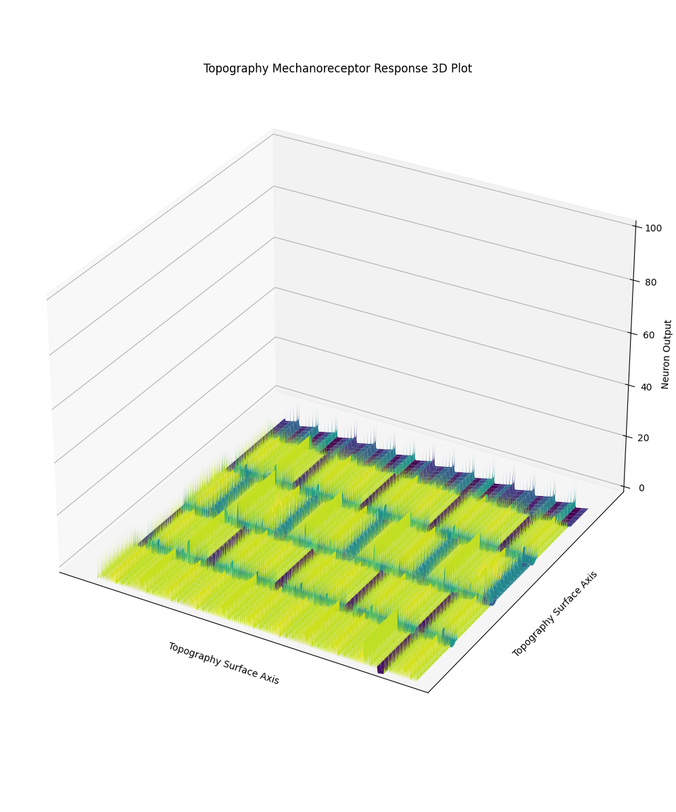
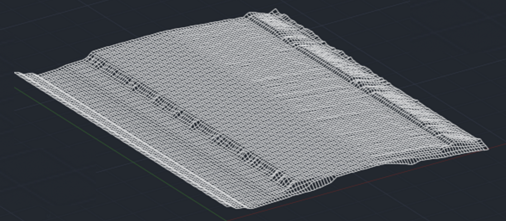
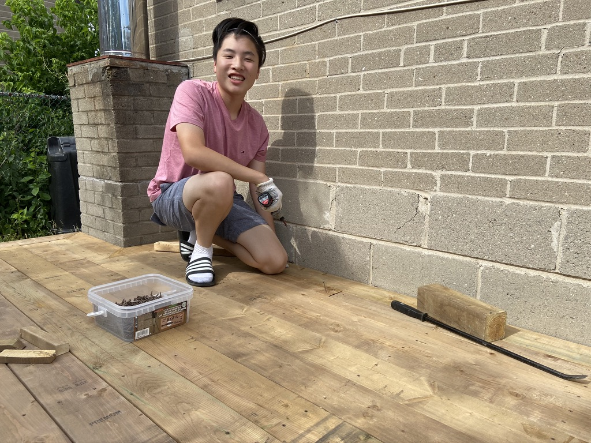

Projects
Electroretinography Electrode Research
Research at UWaterloo's Nanoengineering Department synthesizing ERG electrodes with Au-Ca and Au-Pt nanoparticles. Investigating materials to optimize retinal neural response capture and reduce electrical noise, with focus on adaptability for diverse patient needs.

Mechanoreceptor Model
Developed Python simulation for SA-1 and FA-1 mechanoreceptors in the finger. Simulates receptor array behavior scanning over topographical surfaces, converting physical pressure to current response with visual 3D output.
Mechanoreceptor Simulation Project
This project demonstrates a comprehensive Python-based simulation of SA-1 and FA-1 mechanoreceptors located in human fingertips. The simulation models how these receptors respond to different surface textures and pressures, converting mechanical stimuli into electrical signals that would be interpreted by the nervous system.
The visualizations below show various scanning models and 3D plots that illustrate receptor activation patterns across different topographical surfaces.
Input surface texture
3D plot showing receptor response
Heatmap visualization of activation patterns
Model output scanning over keyboard topography
Surface texture example

Scanning model output over surface texture example
CAD & Design Work
3D modeling and engineering design using SolidWorks and Onshape. Projects and work experience include device housing design, FEA analysis, aerodynamic modeling, and design for 3D printing and manufacturing.
Computer-Aided Design Portfolio
Extensive experience in 3D modeling and engineering design using both SolidWorks and Onshape. Projects range from creating custom device housings and enclosures to performing finite element analysis (FEA) for structural validation. Skilled in aerodynamic modeling, assembly design with bill of materials (BOM), technical drawings with GD&T tolerancing, and design for manufacturing (DFM) principles.
The portfolio below showcases detailed assemblies with exploded views, engineering drawings, and rendered models optimized for 3D printing and rapid prototyping. Work includes complex multi-part assemblies, interference checking, and simulation-driven design modifications.
While most of the images below are earlier projects, I have continued my CAD work in professional experiences, for prototype device housing, integrating aerodynamic designs for sports devices, and more.

Skateboard assembly - Exploded view showing component relationships

Technical engineering drawing with dimensions and tolerances

Skateboard assembly - Rendered final model

LEGO-inspired mechanism - Exploded assembly view

LEGO mechanism - Fully assembled render

Orca housing design - Component breakdown and assembly sequence

Orca enclosure - Manufacturing drawing with specifications

Orca device housing - Final product visualization
Building a Deck in my Backyard
Built a backyard deck, hands-on construction project using hand saws, table saw, circular saw, and various power tools. Gained practical experience in wood cutting, joinery, and structural outdoor construction.
Hands-On Deck Construction
I have always enjoyed working with my hands and building things from scratch. This backyard deck project allowed me to combine practical construction skills with creative problem-solving. From initial planning and measurements to the final finishing touches, I handled every aspect of the build.
The project involved extensive use of woodworking tools including hand saws for precision cuts, a table saw for ripping boards to width, circular saws for cross-cuts, and various power tools for drilling and fastening. I learned proper wood cutting techniques, how to work with pressure-treated lumber, and the importance of structural integrity in outdoor construction. The experience reinforced my appreciation for hands-on fabrication and the satisfaction of creating something functional and lasting.

Completed deck - Full view of the finished construction
On-site during construction with tools and materials